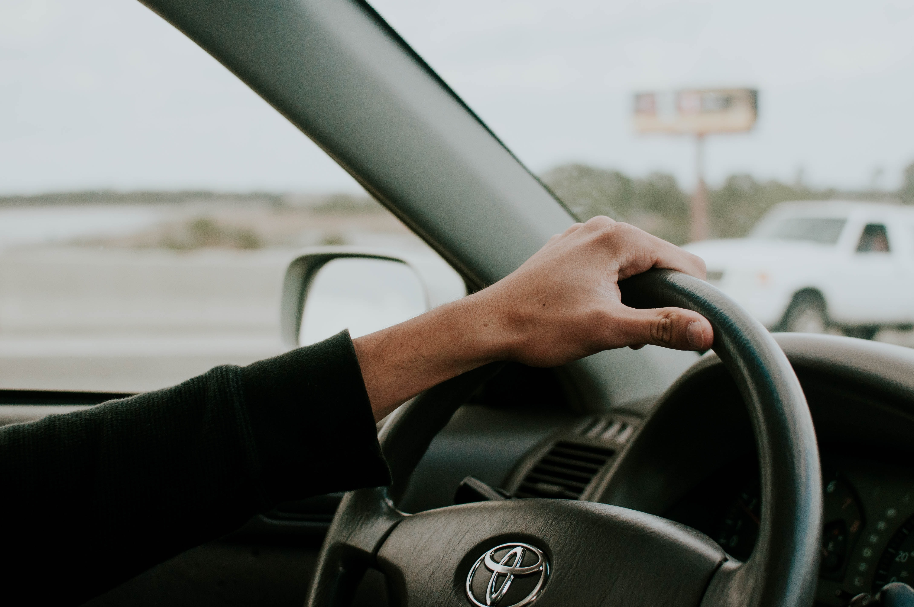
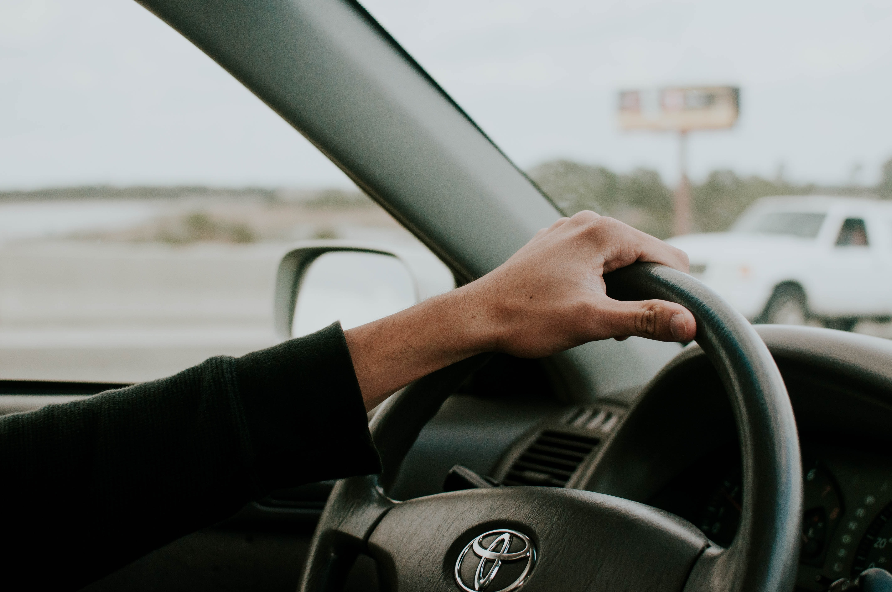

We were a team of 3 people. I played the role of Project Manager and we equally shared UX/UI responsibilities.
I specialized in the user interviews, testing and screen design.
Others honed in more on interaction design and the creation of other UX assets like personas, user journeys and storyboards.

We were a team of 3 people. I played the role of Project Manager and we equally shared UX/UI responsibilities.
I specialized in the user interviews, testing and screen design.
Others honed in more on interaction design and the creation of other UX assets like personas, user journeys and storyboards.

We started with 2 ethnographic research interviews of the current website, followed by 15 1:1 interviews semi-structured user tests, then a 10-question quantitative survey via Google forms which had 20+ respondents and 5 client stakholder interviews..

All of this research allowed us to ideate on two main user personas; a senior citizen who needs to be driven to different places such as medical appointments and a middle-aged person who would primarily be in charge of booking appointments for the senior.
As a team, we did a redline-annotation of the current website, highlighting issues, created two user personas, crafted a User Journey which helped us to form a value proposition.

Value Proposition
Drive a Senior NW helps elders regain their independence and provides volunteer community members by providing a platform that allows neighbors to help neighbors by donating their time, money, and cars. This allows seniors and their families feel safe and empowered to live independently in their homes longer. Additionally, volunteers feel that they are making an impact in their community.
Drive a Senior NW helps elders regain their independence and provides volunteer community members by providing a platform that allows neighbors to help neighbors by donating their time, money, and cars. This allows seniors and their families feel safe and empowered to live independently in their homes longer. Additionally, volunteers feel that they are making an impact in their community.


 We asked users to find a way to donate, to see if they could get to the volunteer page and then just allowed the to talk us through what they would generally wish to explore next in the site.
We asked users to find a way to donate, to see if they could get to the volunteer page and then just allowed the to talk us through what they would generally wish to explore next in the site.

 Based on our stakeholder interviews, we knew that although desktop was what most of their users were accustomed to but we still wanted to be able to provide options for future, mobile-based users. The mid-fi testing gave us some really valuable feedback.
Based on our stakeholder interviews, we knew that although desktop was what most of their users were accustomed to but we still wanted to be able to provide options for future, mobile-based users. The mid-fi testing gave us some really valuable feedback.